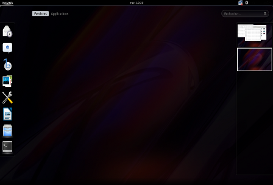

CINNAMON the most widely used desktop environment for Linux Mint, has generally received favorable media coverage particularly for its ease of use and user-friendliness. Due to its classic design, Cinnamon is comparable to the Xfce, MATE, GNOME 2, and GNOME Flashback desktop environments. On November 28, 2024, version 6.4.0 of Cinnamon was released. This version introduced redesigned dialog prompts using the Clutter toolkit instead of GTK. Additionally, a "Night Light" blue light filter was introduced to potentially reduce eye strain and improve sleep quality when the end user uses Cinnamon at night.
